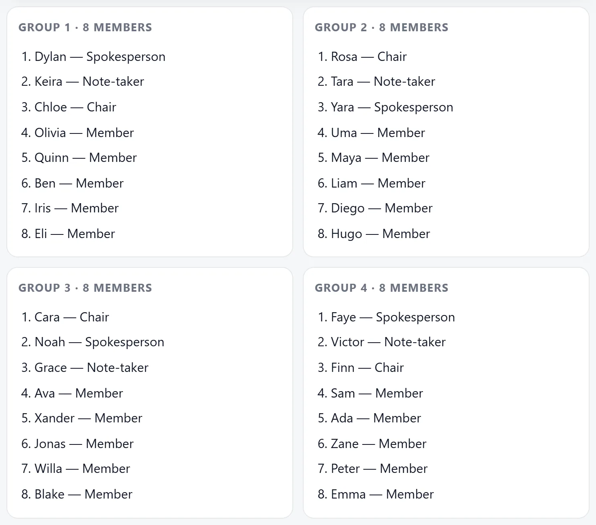

Home › How to group students
How to group students so the groups are not the same all year
If students always pick their own partners, the groups never change: strong students cluster together and quiet ones are left in the last group. These four approaches break that pattern.

1. Pure random (fastest)
Good for short activities: a ten-minute discussion, a quiz, or a game. Paste the names into the group maker, choose the number of groups, and read them out. Every student gets the same chance and nobody can claim the teacher played favorites.
Drawback: one group may hold all the talkative students while another stays silent. For activities that need balance, use method two.
2. Ability-based (most balanced)
Split the list into three tiers: students who pick things up quickly, students in the middle, and students who need support. Build each group with one from each tier, then a second student who needs support.
In practice: make three separate lists, shuffle each one, then take one name from each list per group. The result is a more even group that doesn't look like fast versus slow.
3. Weekly rotation
If the groups are for a long project, change the members every week or two. Save the split as an image, pin it on the board, and use the Reshuffle button.
Rotation gets students used to working with anyone — a skill rarely practiced when groups stay fixed all semester.
4. Assign roles, not just members
A group with no roles usually ends up as one person's work. Decide at the start: lead, recorder, spokesperson, members. Rotate the roles too, so a quiet student gets a turn as spokesperson.
The group maker hands out these roles with the group members.
Mistakes that happen often
- Letting students choose their own partners every time. It is quick, but it locks in existing social groups.
- Keeping the same groups for a whole semester. Students never learn to work with someone new.
- Uneven group sizes. Deal out leftover students one at a time instead of adding them all to the last group.
- Not writing the result down. Two days later nobody remembers who was in which group.
Summary
Short activity: pure random. Project: balanced groups and rotation. Both: assign roles and keep the result — about a minute with the LessonKit group maker.